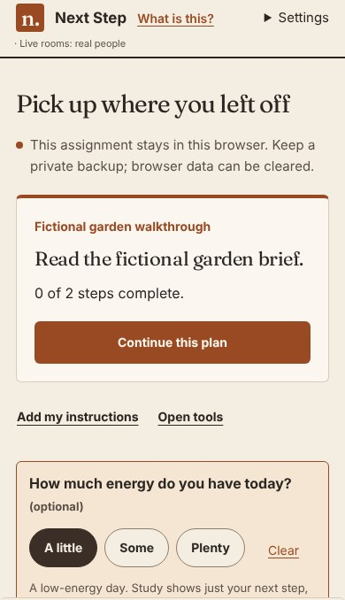
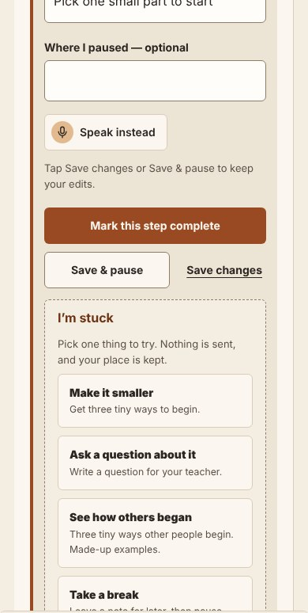
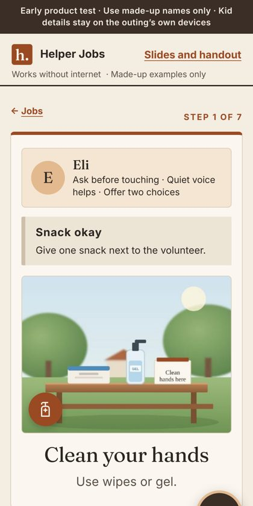

Chapter 4 · Design · Human–computer interaction
From findings to features.
Chapter 2 showed that a brain’s state changes what gets through. Chapter 3 showed that state is hard to read from outside. Each finding became a design rule, and each rule is a real feature in two apps people use.
Four findings, four design rules
Read each card top to bottom: what we found, the rule it gives, and where the rule lives.
From chapter 2
Show less when energy is low.
Found: the same picture lands differently depending on the brain’s state.
In the apps: Next Step asks “How much energy do you have today?” On “A little”, it shows just the next step. Helper Jobs shows one picture step at a time, read aloud.
From chapter 3
Ask, don’t guess.
Found: a sensor read eye state on one stretch, then drifted to a coin flip.
In the apps: the person tells the app how they are doing. The energy check is optional, Help is a button they press, and nothing happens until they tap.
From chapter 3
Expect change halfway through.
Found: within two minutes, the link between signal and state shifted.
In the apps: Next Step has Save & pause, a note of where you stopped, and “Pick up where you left off”. Helper Jobs reminds helpers to take breaks.
From real life
When stuck, make it smaller.
Seen: a task that is too big all at once is where people stop.
In the apps: Next Step’s “I’m stuck” offers to make the step smaller, ask a question or take a break. Nothing is sent, and your place is kept.
The rules, on real screens
Screens from the working apps, with made-up examples.

Show less when energy is lowThe person picks their energy; the plan shrinks to one step.
Pause, and make it smallerSave & pause keeps your place; “I’m stuck” shrinks the step.
One picture step, read aloudA few words, a photo of the real place, and a Help button.
Two apps, real-world help
Both follow the same rules: one step on the screen, big type, a picture, read aloud, and only made-up people in the examples.
By Amishi Mehta · for schoolwork
Next Step
For young people who find long instructions, interruptions or explaining their needs hard. Made with neurodivergent students in mind.
What it does: turns a long assignment into one next step, practises words for asking for help, and keeps a note of where to restart. Open Next Step →
Family project · for Pragnya outings
Helper Jobs
Gives neurodivergent adults a real job at kids’ Sunday outings, with a volunteer always close by.
What it does: picture steps read aloud in English, Hindi or Spanish, break reminders, and Help that reaches the lead’s phone in about a second. Open Helper Jobs →
The loop on a phone
The phone tour tells the same five chapters, one screen at a time, in the same design as the apps.
Careful claims
The studies suggest these rules; they do not prove the apps work. These are early test versions with made-up people in every example, not tested in a formal study, and they do not diagnose or treat anything.
Closing the loop: do these designs actually help the people they are for? That is where the research goes next. Chapter 5 →